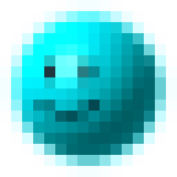
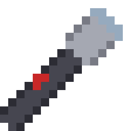
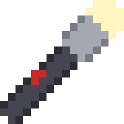

Gemini ile sohbet
Sohbete "Mehburity, ..." diye yaz. Nerede olduğunu, canını ve çevrendeki tehlikeleri bilerek cevap verir, son konuşmaları hatırlar.
Verity'den ilham alan, havada süzülen neon camgöbeği bir yapay zekâ yoldaşı. Gemini ile sohbet eder, senin için savaşır, maden kazar, ev inşa eder ve kızdırılınca 18 blok boyunda bir iblise dönüşür. Zifiri karanlık geceler, bir el feneri ve karanlıktan izleyen şeyler seni bekliyor.
Mehburity, Minecraft 26.2 için Fabric ile yazılmış bir yapay zekâ yoldaşı: yanında dolaşan neon camgöbeği, gülen yüzlü bir top. Gemini ile seninle konuşur, sesli cevap verir, seni korur, maden kazar ve ev yapar. ThatMob'un Verity'sinden esinlenmiştir: bir kutudan çıkar, dünya zifiri karanlıktır, elinde bir el feneri vardır ve karanlıkta bazen yalnız değilsindir.
Sohbete "Mehburity, ..." diye yaz. Nerede olduğunu, canını ve çevrendeki tehlikeleri bilerek cevap verir, son konuşmaları hatırlar.
Cevaplarını sesli okur. Bir tuş atayıp basılı tutarak ona sesli de konuşabilirsin; uzaklaştıkça sesi kısılır.
Sana saldıran yaratıklarla ışınıyla savaşır.
İstediğinde senin için maden kazar.
Ahşap, taş, tuğla ya da elindeki bloktan, istediğin boyutta ve 4 kata kadar ev inşa eder. Beğenmezsen "evi geri al" dersin.
Gitmek istediğin yere sadece yürüyebileceğin yollardan götürür; rota yerde neon noktalarla görünür.
Ona vurursan öfkelenir; fazla kızdırılırsa 18 blokluk bir iblise dönüşüp suçluyu avlar. Pasta ve özür onu sakinleştirir.
Karton kutudan çıkış, zifiri karanlık geceler, pille çalışan bir el feneri ve karanlıkta seni izleyen şeyler.



Oyun içi ekran görüntüleri yakında eklenecek. Şimdilik moddaki eşyaların dokularını görebilirsin.
İpucu: MehburMC Launcher ile Fabric profilini tek tıkla kurabilir, modları Mod Toggle ile açıp kapatabilirsin. Launcher'a göz at →
İndirdiğin dosyanın benim yayınladığımla birebir aynı olduğunu kontrol etmek için dosyanın bulunduğu klasörde PowerShell'i açıp şu komutu çalıştır:
Get-FileHash .\mehburity-0.1.0.jar -Algorithm SHA256Çıkan SHA-256 değeri bununla aynı olmalı:
42cac1dca48ce530f602850075c49d29fb7e16390ad4a831dba824c39e59ec19